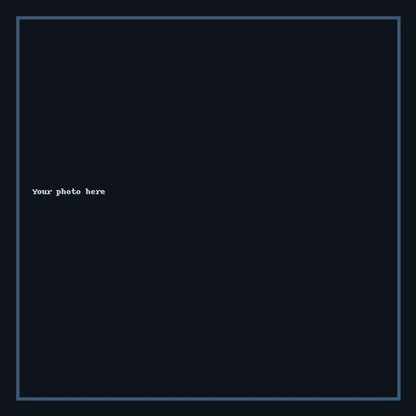

This is my website for maths which is usable as both a teaching resource and a way to self study Mathematics. Here I always try to explain the why behind stuff. And I also try to explain it at the level where you have to use the stuff, even if this means explanations are long and complicated as I have to develop some theory. I want to eliminate the frustrating experience I've had where I search for the proof of a result applied at A level but all the proofs that exist assume undergraduate background. Also, my video on arithmetic and algebra basics was designed to address many pitfalls and sources of confusion I've seen from people who struggle with maths.
I was originally making notes to keep my own maths knowledge and proof dependencies organized but eventually noticed that these turned into useful materials that I wish I had when I was an A level student, which is what inspired me to make this.
Be mindful that while I have gone through great lengths, and I think done a good job, to make these as accessible as possible, some of the proofs are very quick while others are long and technical and may require perseverance to follow, but don’t give up! This is the tradeoff to do this “Used at that level ⇒ proved at that level, no higher background assumed” philosophy that I hold. For example, the central limit theorem is used at A level but takes 11 pages of algebra to prove from previous ideas at an A level background.
Note that some proofs appeal to intuition. I try to keep things rigorous most of the time, but when it’s much easier to appeal to intuition, I do so. For example, I don’t think proof is needed to convince you that a hill with no jumps that goes from an altitude of 0 meters to 2 meters has a point on it at an altitude of 1 meter.
You can contact me at ufkerfuffle@gmail.com to suggest better proofs or explanations, correct errors, or just to chat! If an error affects a complicated proof, please suggest an alternative self‑contained route.
I'm a maths student starting at University of Cambridge in 2025 and I've been passionate about Maths for my entire life. I also know pi to 7000 decimal places which is cool and actually was surprisingly fun to do (I did know 8045 but I need to revise).
There are more levels, I will add those later